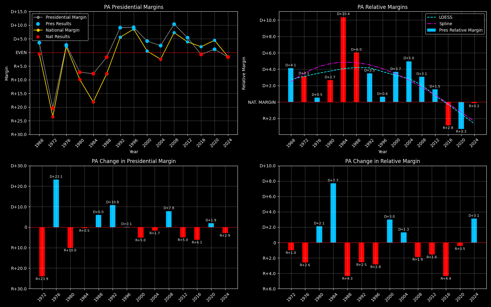

← Back to Map

Pennsylvania statewide
Pennsylvania (PA) — Data
| Year | D | R | Margin | Rel. Margin | Nat'l Margin | Margin Δ | Rel. Margin Δ | Nat'l Margin Δ |
|---|
| 1976 | 2,328,677 | 2,205,604 | D+2.7 | D+0.4 | D+2.3 | 0 | 0 | 0 |
| 1980 | 1,937,540 | 2,261,872 | R+7.7 | D+2.6 | R+10.3 | R+10.4 | D+2.2 | R+12.6 |
| 1984 | 2,228,131 | 2,584,323 | R+7.4 | D+10.8 | R+18.2 | D+0.3 | D+8.3 | R+7.9 |
| 1988 | 2,194,944 | 2,300,087 | R+2.3 | D+5.3 | R+7.7 | D+5.1 | R+5.5 | D+10.6 |
| 1992 | 2,239,164 | 1,791,841 | D+11.1 | D+3.9 | D+7.2 | D+13.4 | R+1.5 | D+14.9 |
| 1996 | 2,215,819 | 1,801,169 | D+10.3 | D+0.7 | D+9.6 | R+0.8 | R+3.1 | D+2.4 |
| 2000 | 2,485,967 | 2,281,127 | D+4.3 | D+3.8 | D+0.5 | R+6.0 | D+3.1 | R+9.1 |
| 2004 | 2,938,095 | 2,793,847 | D+2.5 | D+5.0 | R+2.5 | R+1.8 | D+1.2 | R+3.0 |
| 2008 | 3,276,363 | 2,655,885 | D+10.5 | D+2.9 | D+7.5 | D+7.9 | R+2.1 | D+10.0 |
| 2012 | 2,990,274 | 2,680,434 | D+5.5 | D+1.4 | D+4.0 | R+5.0 | R+1.5 | R+3.5 |
| 2016 | 2,926,441 | 2,970,733 | R+0.8 | R+3.1 | D+2.3 | R+6.2 | R+4.5 | R+1.7 |
| 2020 | 3,458,229 | 3,377,674 | D+1.2 | R+3.4 | D+4.5 | D+1.9 | R+0.3 | D+2.2 |
| 2024 | 3,423,042 | 3,543,308 | R+1.7 | R+0.2 | R+1.5 | R+2.9 | D+3.1 | R+6.0 |